In the last couple drafts of the BGPS paper (e.g. the May 15, 2013 draft),
we've included a single simulation demonstrating the flux recovery of the
Bolocat:


These figures are regarded as very important, as they demonstrate the
capability of recovering accurate flux density measurements from a realistic
sky using bolocat.
However, the above figures show a simulation only for one set of parameters,
with \(\alpha=1\)
in the power-law flux distribution, which unfortunately
is not realistic according to "Figure 8":

So I've started up a new experiment, experiment #23, to examine this problem.
The problem has a few layers:
- The reason I used \(\alpha=1\)
is that it looks much like a realistic
BGPS map after processing, in the sense that most of the field is empty
but there are a few hundred sources in the map. However, \(\alpha=1\)
is not a realistic representation of the measured power spectra.
- \(\alpha=2\)
maps with the previous normalization had a peak value of
18 Jy, which resulted in heavily signal-dominated output maps that did not
resemble BGPS maps.
- The normalization is tricky. One of the key goals of the simulations was to
test the effect of different atmospheric to astrophysical signal ratios on
the angular transfer function; in order to accomplish this, it was necessary
to scale the atmospheric power based on the astrophysical power at its peak
in fourier space. i.e., in real timestreams, we can measure the astrophysical
to atmospheric power ratio, but we have to perform that measurement somewhere
that the angular transfer function is known to be reliable. This is done at
about 1 Hz.
- The normalization is important because of the noise level. In the
simulations, we use a fixed noise level of about 30 mJy in the timestreams
to match our best observations (though it is not difficult to scale this to
other levels). This fixed noise level means that, for some normalizations,
all pixels are statistically significant. Also, even though the noise level
is fixed, it will be higher because of intrinsic noise in a power-law
distributed map.
- The normalizations used in experiment #21, the angular transfer function
measurement, were selected such that there would be high signal-to-noise at
all angular scales. This means that white noise would not be dominant on
any angular scale, since white noise is equivalent to \(\alpha=0\)
. So
it wasn't crazy to use these ridiculously high-flux maps, but it is not
feasible to use the same maps for analysis of point sources. In maps for
which we're interested in small-angular-scale features (<100"), we want the
maps to be primarily noise-dominated with a handful of bright features
either caused by adding point sources directly or from the local peaks in
the power-law distributed flux.
Some notes along the way:
- Using a power-law background, the point-source sensitivity is much worse
than without a power-law background. This is intuitive: a 100 mJy source
on a 200 mJy background (which may easily include power fluctuations on the
smallest scales of comparable magnitude) is not going to be recovered.
- Doubly important: a 1 Jy source should have peak amplitude 1 Jy, but the
current method of adding point sources adds them as delta functions that are
later convolved, conserving the total flux rather than the peak flux.
This needs to be changed! (has been now)
Here are some examples of what the before/after look like with point sources added.
The first has bright sources, the second faint sources:
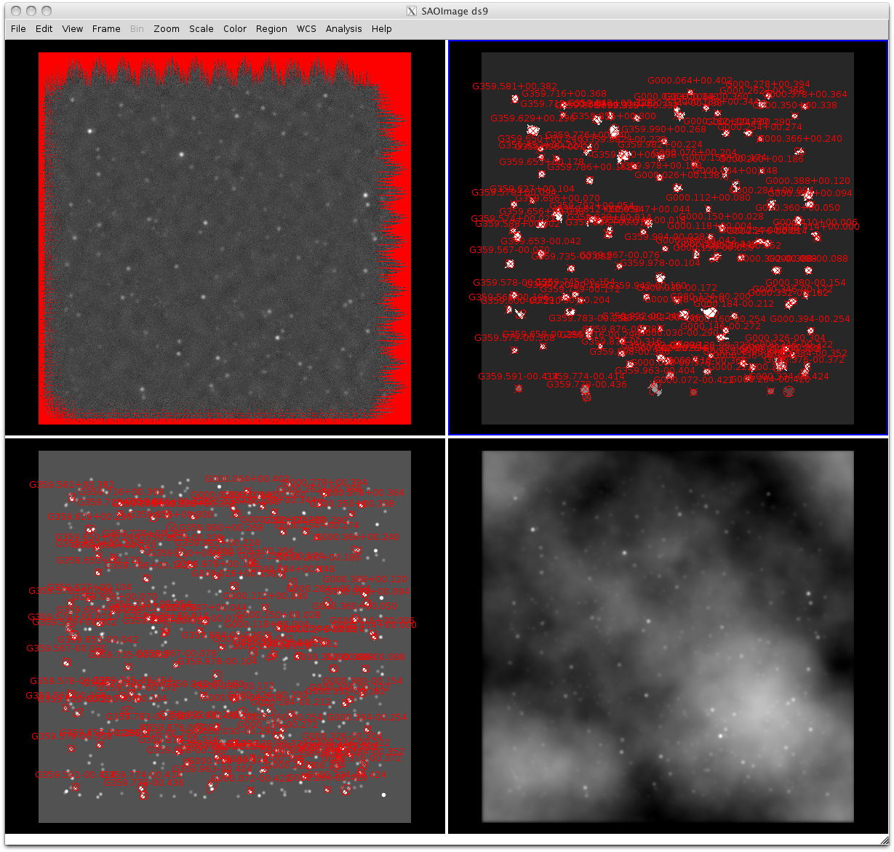
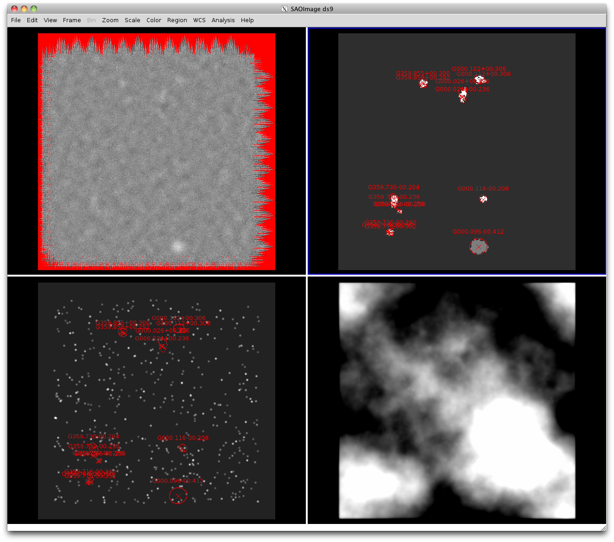
With these new figures, the 40" apertures work fine, but the 120" apertures are
still utterly junk. This does not make sense.
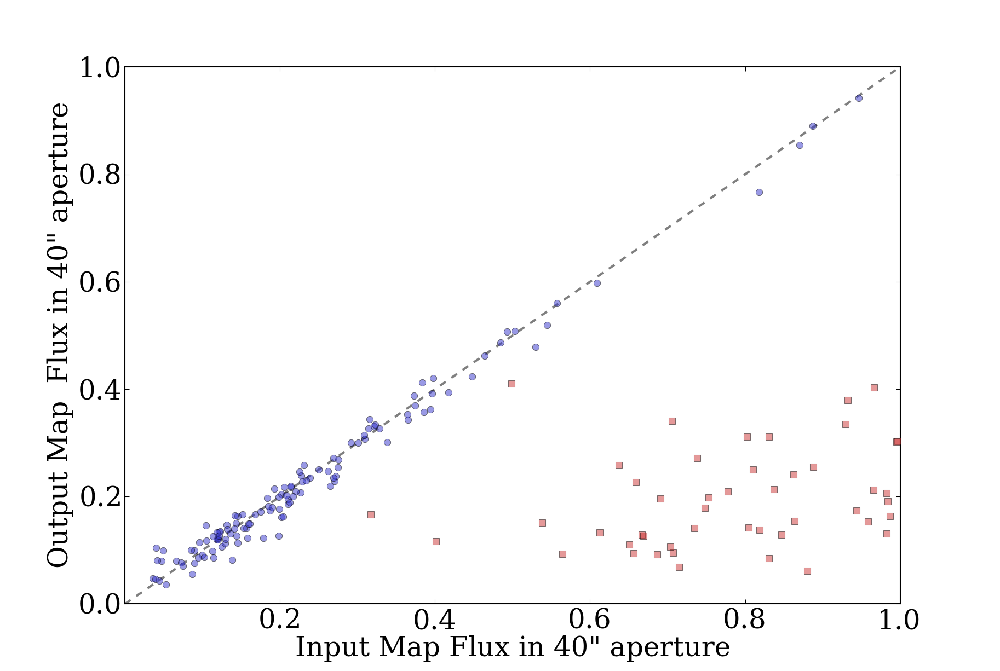
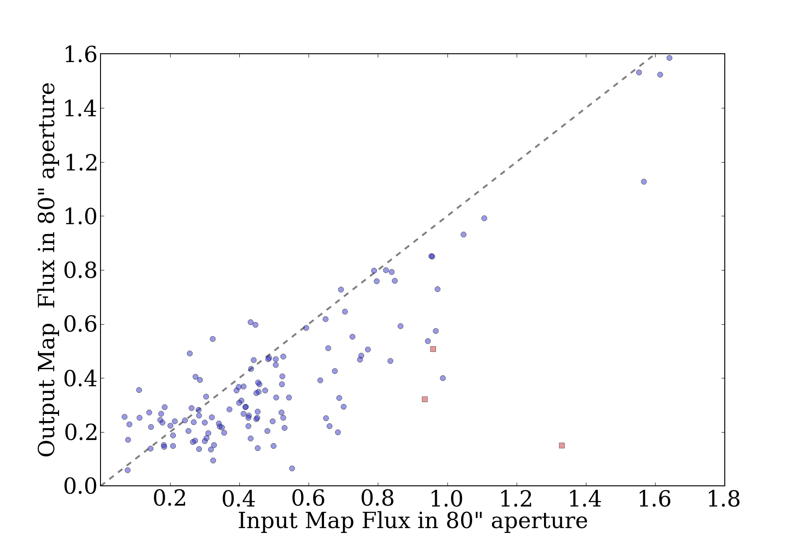
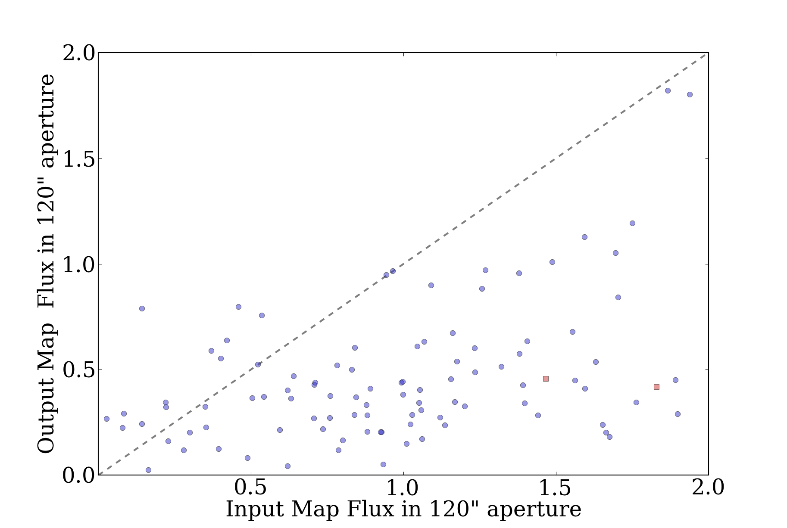
A careful analysis of a single source shows that something is wrong. Here are some annular extractions
followed by the image:
Input Map:
reg sum npix mean median min max var stddev rms
--- --- ---- ---- ------ --- --- --- ------ ---
1 26.3323 22 1.19692 1.18083 1.10787 1.28825 0.00208826 0.0456975 1.1978
2 77.8553 74 1.0521 1.047 1.00426 1.123 0.000929507 0.0304878 1.05254
3 124.868 122 1.02351 1.02869 0.996566 1.04427 0.000260295 0.0161337 1.02363
Output Map:
reg sum npix mean median min max var stddev rms
--- --- ---- ---- ------ --- --- --- ------ ---
1 3.89157 23 0.169199 0.175204 0.086872 0.255151 0.00206254 0.0454152 0.175188
2 2.06843 74 0.0279517 0.0275116 -0.0695484 0.155258 0.00210834 0.0459167 0.0537554
3 0.502601 123 0.00408619 0.00629906 -0.121023 0.0834974 0.00143969 0.0379432 0.0381626
Backgrounds:
Input Map:
reg sum npix mean median min max var stddev rms
--- --- ---- ---- ------ --- --- --- ------ ---
1 297.054 291 1.0208 1.02293 0.98094 1.05234 0.000313419 0.0177037 1.02096
3 2538.6 2618 0.969671 0.972413 0.859551 1.12495 0.0015557 0.0394423 0.970473
Output Map:
reg sum npix mean median min max var stddev rms
--- --- ---- ---- ------ --- --- --- ------ ---
1 1.49461 291 0.00513613 0.00729431 -0.121023 0.133141 0.001586 0.0398247 0.0401545
3 5.83372 2618 0.00222831 0.00194597 -0.195075 0.181155 0.00211747 0.046016 0.0460699
Bolocat for this source:
In [200]: fields
Out[200]: ['FLUX_40', 'FLUX_40_NOBG', 'BG_40', 'FLUX_120', 'FLUX_120_NOBG', 'BG_120']
In [198]: [inp[61][f] for f in fields]
Out[198]: [0.1896538, 1.3536235, 0.38071653, 0.83893013, 10.77737, 0.42352486]
In [199]: [m20[61][f] for f in fields]
Out[199]: [0.18015364, 0.18674377, -0.016305592, 0.2868295, 0.29759517, -0.00027596406]
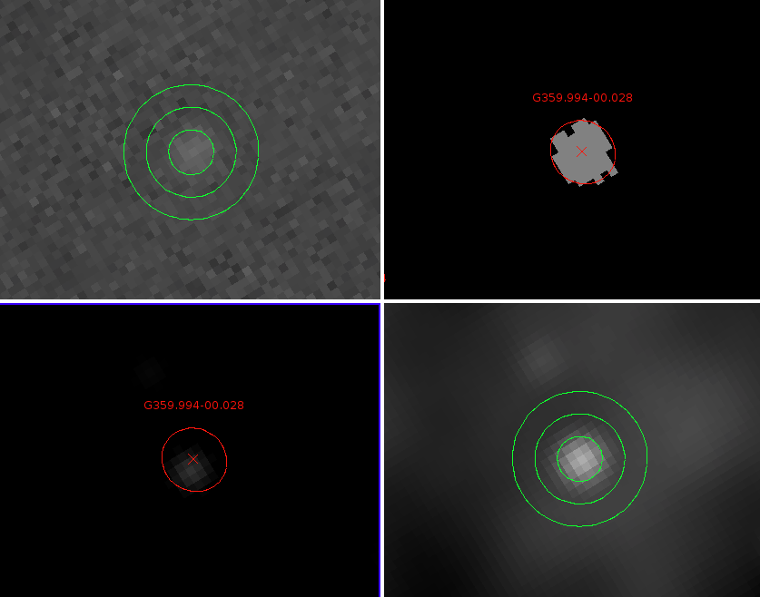
With background apertures:
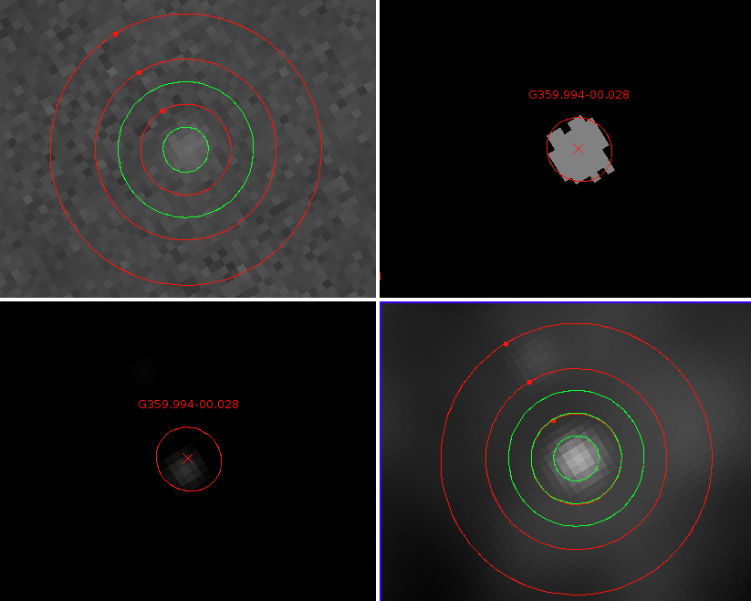
However, note that the background are computed using the mmm.pro
sky-background estimation procedure over a range \(2r\)
to \(4r\)
(i.e., 40-80" and 120-240" radius for the 40" and 120" diameter apertures).
The numbers shown by ds9 disagree fairly severely with those from bolocat.
In particular, it appears that the background estimate returned by mmm.pro
is off by a factor of 2, in this case giving 0.42 instead of 0.97. Turns out
this was due to an indexing error that did not affect the pipeline results in
any way.
Out of date analysis:
Bolocat's flux total in the 120" aperture is 10.77 Jy/beam, background is 0.42
Jy/beam. There are 218 pixels. The resulting flux should be
(10.77-0.42*218/23.8), but this gives 6.9 instead of the expected 0.84. Why?
If we do the same with the ds9 numbers, we get a total of 9.62 Jy/beam,
background 0.97 Jy/beam average, so: (9.62 - 0.97*218/23.8) = 0.74.
This is consistent with bolocat, and very very wrong.
If we take our background to be 1.02 instead of 0.97, we get 0.28 Jy/beam,
which is exactly the right answer according to the pipeline. 1.02 comes from
taking a much more local background subtraction from r=40 to r=80 arcsec,
which isn't really acceptable. If we go from r=60 to r=120, the disagreement remains
fairly bad, with f=0.38 Jy/beam, but certainly a lot better.
Bolocat after the correction:
In [297]: [m20[61][f] for f in fields]
Out[297]: [0.18015364, 0.18674377, 0.00578439, 0.25477698, 0.29759517, 0.0041758944]
In [298]: [inp[61][f] for f in fields]
Out[298]: [0.1896538, 1.3536235, 1.0216572, 0.40137589, 10.77737, 1.0119308]
This may mean that we'll need to re-do aperture extraction with a tighter
background region everywhere. I made the change to object_photometry.
However, even with the change, even in the best case, FLUX_120 appears to
be totally unreliable. FLUX_80 is acceptable with the change, but only for
bright sources (for faint sources, <1 Jy, there is no recovery at all - I think this
must be an issue of the source brightness still not being calculated correctly):
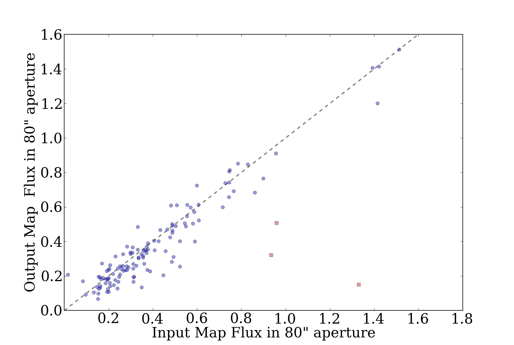
I'll have to continue this analysis tomorrow once the full suite of simulations
has completed, but I strongly suspect that we'll have to recommend strictly
against using FLUX_120 if the background is expected to be \(\alpha=2\)
distributed.
Day 2
The simulations have partly completed. After correcting the error with
convolved point sources vs. delta functions, I reset the flux distributions to
be 0.05 to 1.0 Jy for the "faint" distribution and 0.1 to 50.0 Jy for the
"bright" distribution (both with power-law distributions \(\alpha=2\)
).
The results can be summarized:
- In the presence of complex background, i.e power-law distributed flux density
with amplitude comparable to the detected source brightness, only the smallest
aperture (40") is reliable (i.e., recovers a flux in the input and
processed map).
- The recovered flux density has a very high dispersion in the presence of
high-amplitude power-law flux. "Very high" = \(\sigma \gtrsim 1\)
around a mean of 1.
- There is no evident dependence of the maps on the atmospheric properties.
Therefore, there's no sense in varying the atmospheric properties in the
simulations.
I decided the simulations needed changing again. First, there was excessive
sampling in astro/atmo parameter space; this is not needed (see point 3). More
important is the power-law distribution map's peak flux. Also, it is more
important to get decent sampling of bright-ish sources than to have a
"physically accurate" point source distribution; the distribution of sources
does not affect the recovery, but it does affect the signal-to-noise of the
recovery measurement. Please don't ask me to defend this statement; it would
require another 10 hours of computer time + me time that I really don't want to
allocate, but I'm confident that it is true.
The essential conclusion is that, for \(\alpha=2\)
, point source recovery
is only possible if the point source is brighter than the background, which is
a very intuitive result. Background annulus subtraction isn't very effective
at pulling out sources.
Conclusions:
- These experiments show that source recovery is very poor in the presence of a
bright power-law background: it is not possible to reliably extract point
sources from a map filled with power-law distributed emission brighter than or
comparable to the point sources.
- The 120" apertures aren't really good for anything.
- There is so much source-extraction parameter space out there that any
further study would really deserve its own paper.
Additional plots of interest:
40" aperture in the presence of a bright background with faint sources:
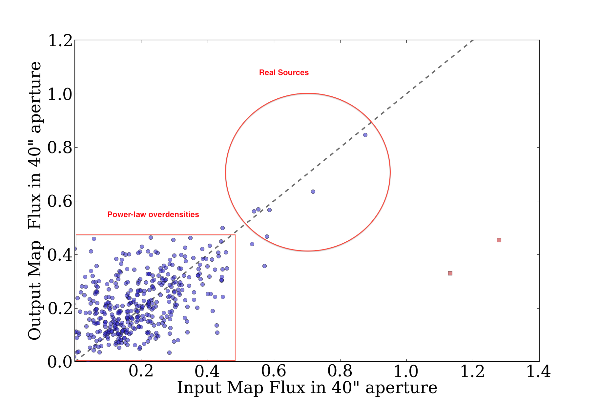
Versus the same with a faint background:
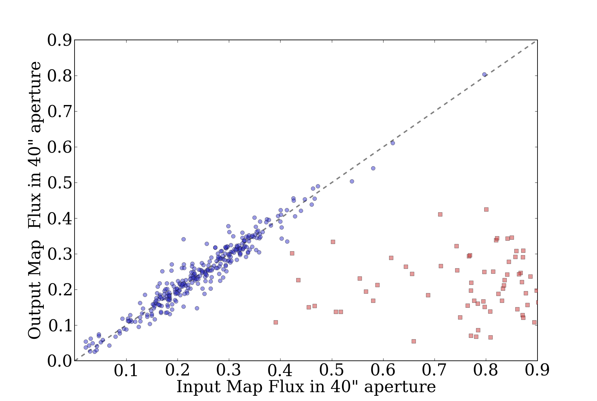
Compare these to the 120" equivalents (bright then faint background):
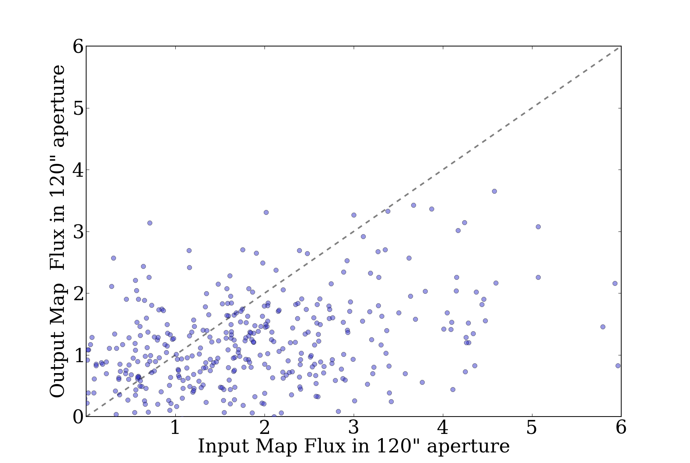
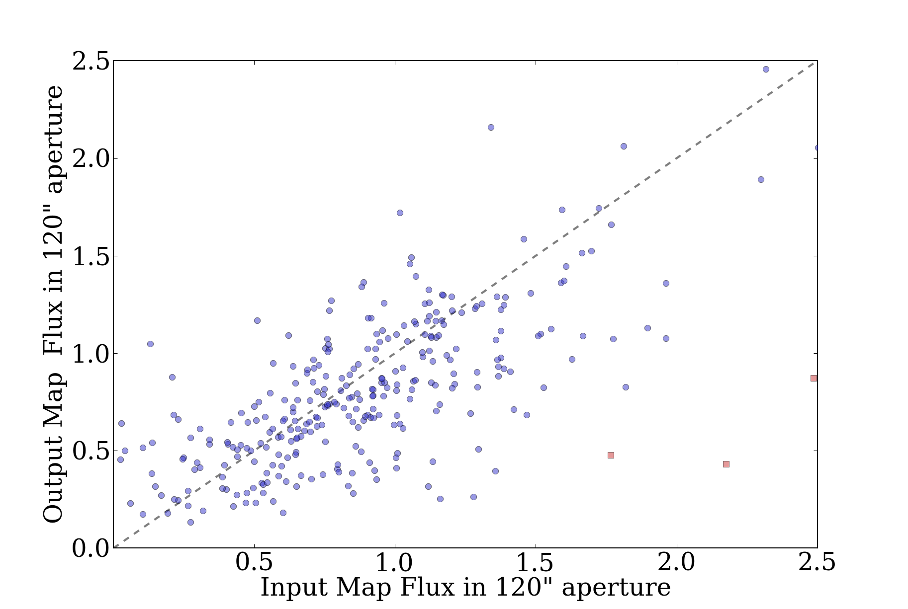
It's fairly easy to see why there are issues with the bright background and the
120" apertures. In this image, bright background on the left, faint background
on the right, with faint sources (0.1-1 Jy).
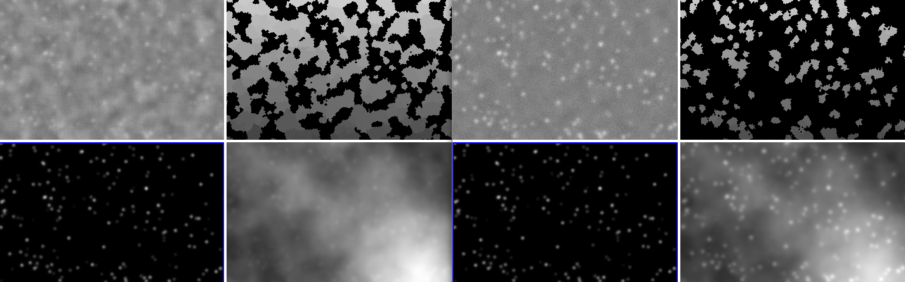
It's more helpful to look at that previous image with the source contours
superposed. These images really give a nice feel for what it means to have
point sources subsumed in \(\alpha=2\)
background.
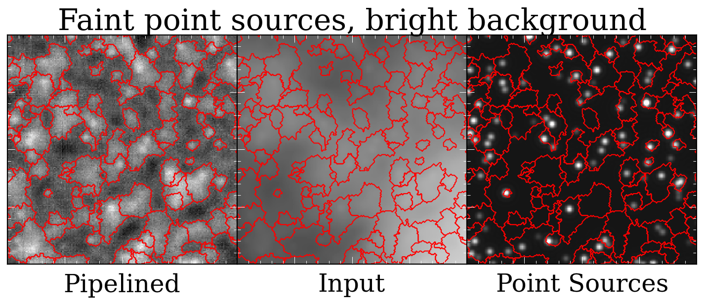
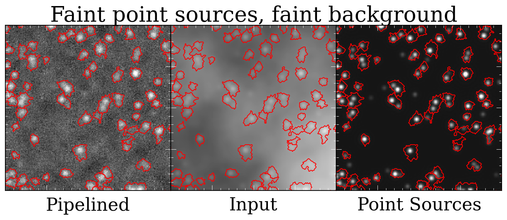